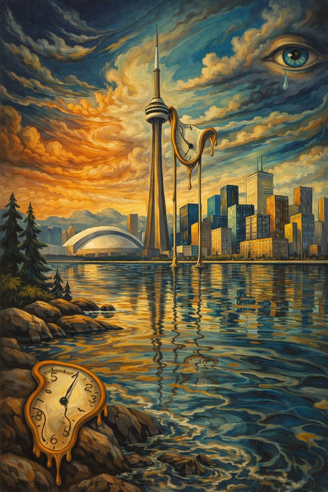
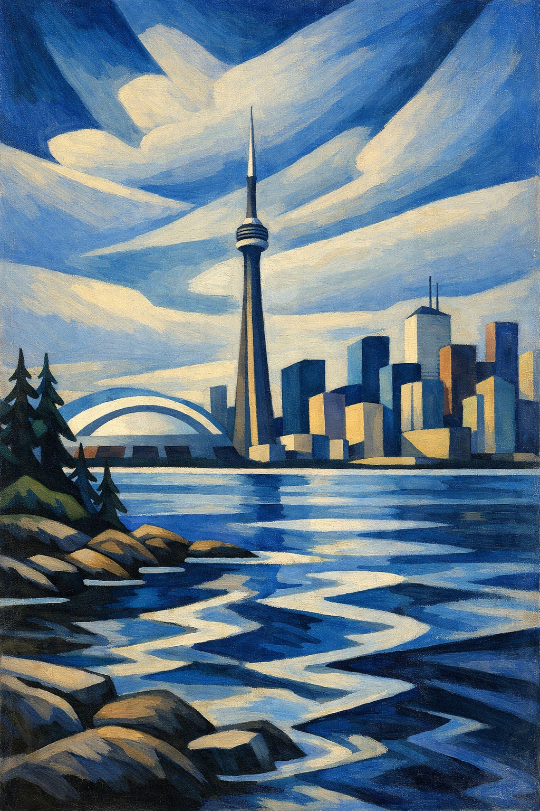
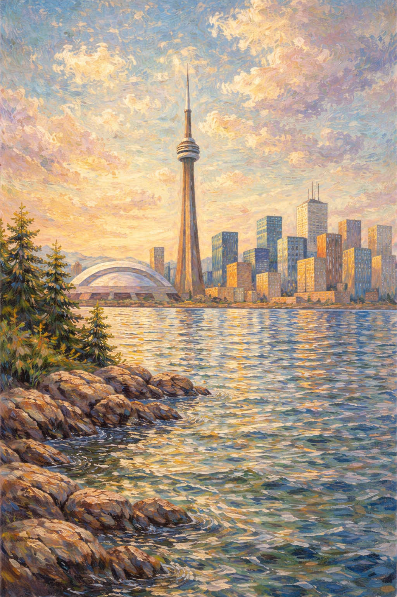
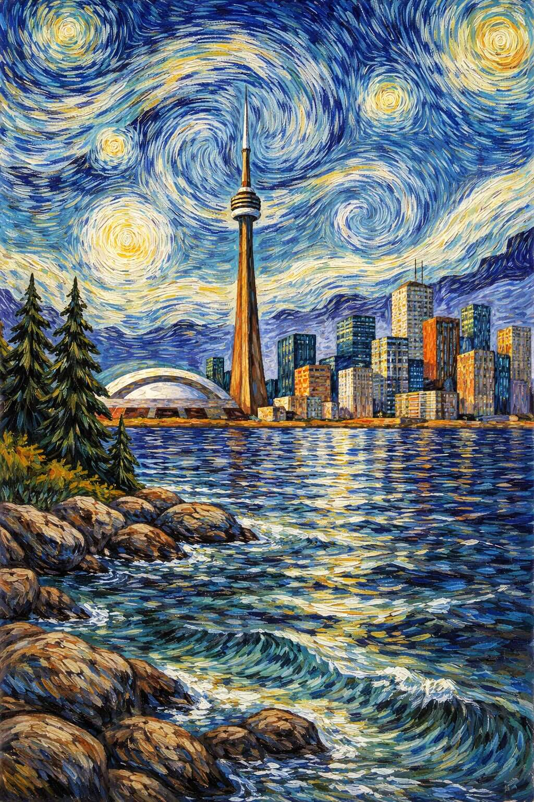
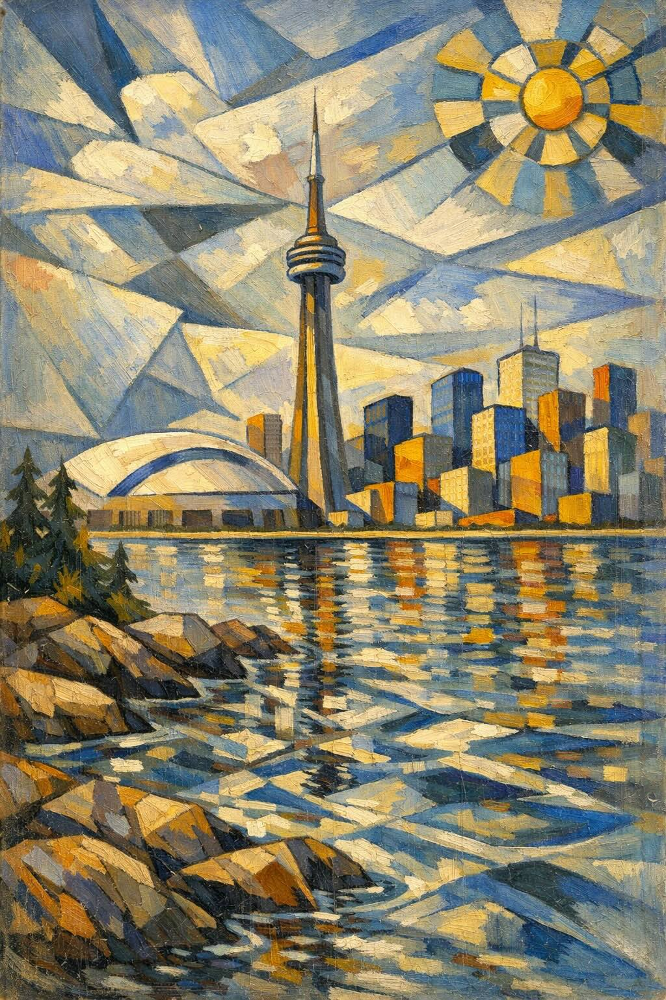

I asked ChatGPT to imagine paintings of Toronto as seen from its waterfront by some of my favorite artists. Please enjoy!
If Dali Painted Toronto

If Lawren Harris Painted Toronto

If Monet Painted Toronto

If van Gogh Painted Toronto

If Picasso Painted Toronto
